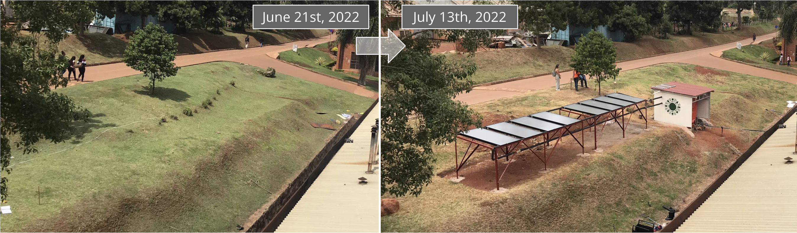
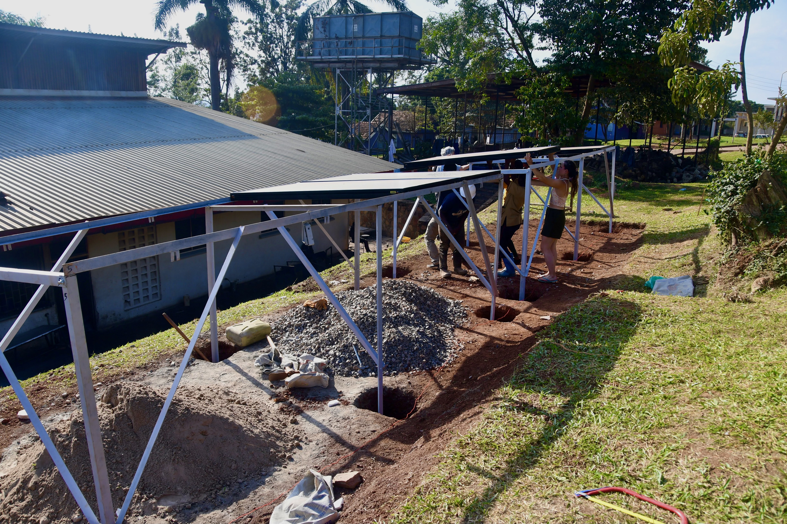
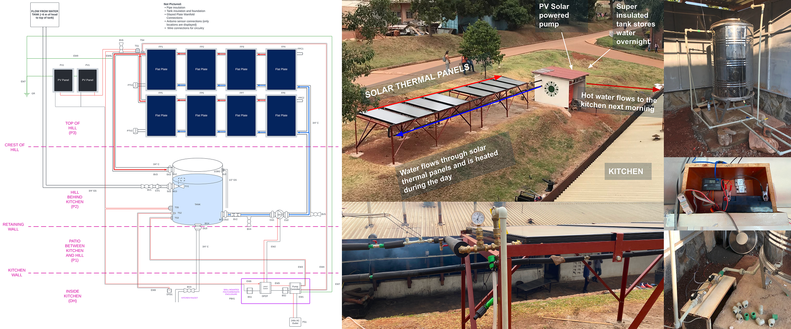
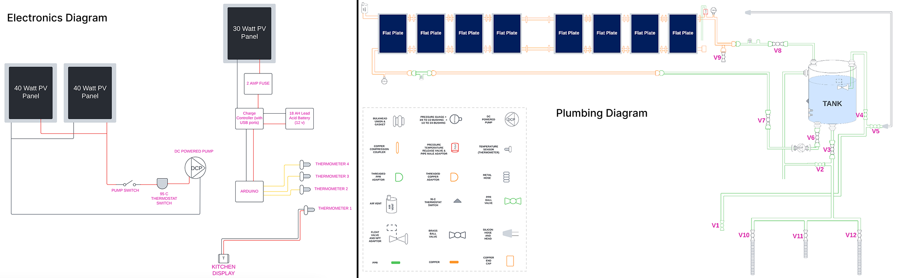
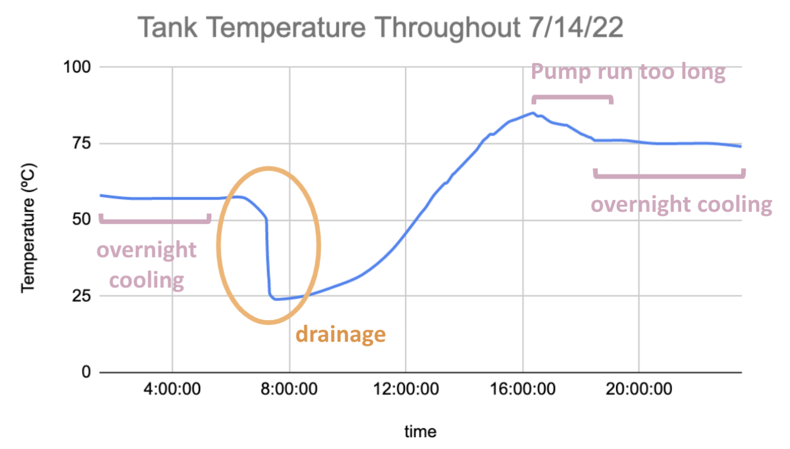
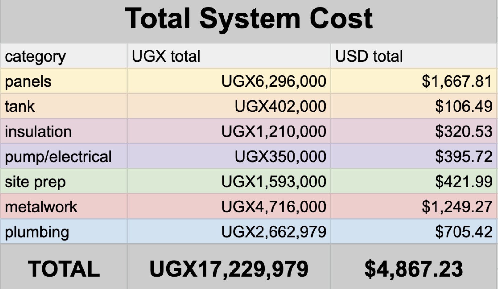
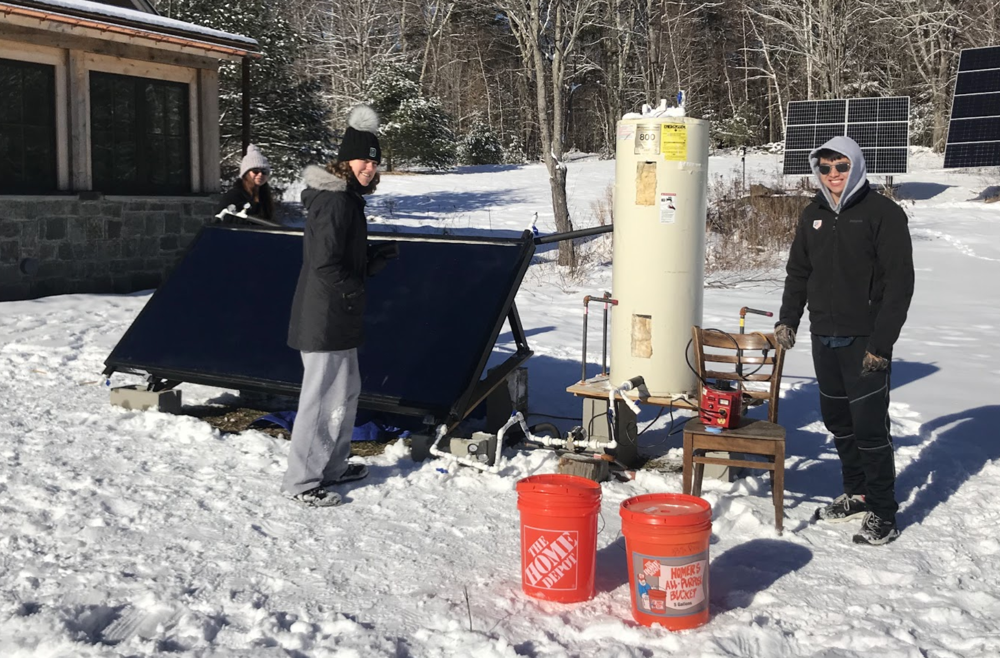

Solar Water-Heating System
I co-led the design, implementation, and testing of an off-grid solar water heating system to displace the use of firewood for cooking at Uganda Christian University (UCU), a 10,000 student university in Kampala, Uganda.
This project was part of the Dartmouth Humanitarian Engineering club, and I was one of the three students who brought this project from concept to reality over the course of two years. Our team spent over a year desinging the system in collaboration with Dartmouth faculty and students and faculty at UCU, then traveled to UCU in the summer of 2022 to build and test the system. We received funding awards from the Thayer School of Engineering Dean’s Fund, the Irving Institute, and the NSF Innovation Corps. The system continues to operate at UCU today and provide economic, environmental, and educational value.
The system we built in Uganda in Summer of 2022

Overview
Currently, ~800 million people in SSA rely on biomass for cooking, which leads to premature death and disease, large scale deforestation, and significant CO2 emissions.
The goal of our project was to work with local partners to develop a cost-effective, culturally aware, and practical system to pre-heat water in order to displace firewood consumption at schools in Sub-Saharan Africa.
We successfully constructed a working pilot prototype in Uganda with students from UCU in June-July 2022. This system used 8 solar thermal collectors and a PV powered circulating pump to heat 500 liters of water to about 60 C, which is stored overnight in insulated tanks and used the following morning; the cycle then repeats.

In June 2023, another set of Dartmouth students traveled to UCU to check on the system and to double the capacity of the system to 1000L by constructing a parallel duplicated system. Although I was heavily involved in knowledge transfer, design review, and hand-off of the project ot this second set of Dartmouth students, I did not travel this second time (I was interning at Tesla at the time of this second trip). Therefore, the details on this page are about my work.
Diagrams & Pictures, as built


System Performance
- Size: 500L
- Flow rate: 14 liters per minute: (3.7 gpm)
- Max recorded tank temperature: 85 C
- Max recorded temperature on “ cloudy day”: 60 C
- Impact: Use of 71 C water reduced boiling time for 100 liters from 60 minutes to 20 minutes. Still being used properly by cooks.

Economic Analysis post-implementation
The dominant cost components were the panels, tank shed enclosure, plumbing, and racking/metal work.
- Initial investment: $4,867
- Calculated savings: $1557 per year
- Simple payback period: ~3 years

Initial Prototyping
Our team of 3 spent over a year learning about the problem, forming a collaboration with Uganda Christian Univeristy, designing the system, going through design reviews, and applying for grants and funding. Our design work included calculations, simulations using MATLAB and TSOL, and proof-of-concept testing using a small-scale setup at Dartmouth (shown right).
